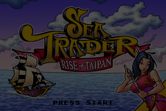
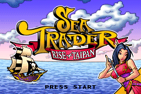

Sea Trader - Rise of Taipan (USA)
Stateless / Passcode
Cartridge Identity
- Game Code
ALJE(FamilyALJ)- Header Title
SEA TRADER- Maker / Revision
0A/ rev0- ROM Size
- 4.0 MiB (4,194,304 B)
- Save Media
None / Unknown- SHA-256
8da18980c5b28b4b2b6e3cda83c5314f2b2d7c92c494753f4a91723bb966b1a6- Engine / SDK Group
comm-004(98 families)
Screenshots


Cartridge Storage Architecture: Stateless / Passcode
Zero non-volatile battery hardware: This cartridge PCB contains ROM only (no SRAM, Flash, or EEPROM chips). Progression is preserved via on-screen passcodes or session-only gameplay. No
.sav file is generated or required.
ROM Assets, Compression & Audio
- BIOS Compression
- LZ77 (
0x10): 0 streams · RLE (0x30): 0 streams - ROM Pointer Tables
- 1 tables (0 pointing to validated compressed streams)
- SDK Backup Tags
EEPROM_V122
Asset Map (formatkit.asset-map.v1)
Download ALJE-r0-8da18980c5b28b4b.asset-map.json.gz (39,278 B (38.4 KiB)) Verified PASS · 18.62% coverage
| Metric | Bytes / Value | Entries |
|---|---|---|
| Identified | 416,066 B (406.3 KiB) (9.92%) | 346 |
| Mapped | 0 B (0.00%) | 0 |
| Opaque | 364,908 B (356.4 KiB) (8.70%) | 1 |
| Unknown | 3,413,330 B (3.26 MiB) (81.38%) | 326 |
| Total ROM Size | 4,194,304 B (4.00 MiB) | 673 |
| Coverage % | 18.62% | — |
| Entries w/ Code Refs | 323 / 673 (47.99%) | — |
Top Identified Formats: audio.konami-sample (28 · 347,650 B (339.5 KiB)) · gfx.gba-palette (317 · 68,224 B (66.6 KiB)) · gba.rom-header (1 · 192 B)
Largest unknown Extents (Headerless / Custom Asset Candidates)
| Offset | Size | Shannon Entropy | Code Refs |
|---|---|---|---|
0x00260C88 | 545,608 B (532.8 KiB) | 7.806 bits/B | 0 |
0x002FC644 | 168,512 B (164.6 KiB) | 4.867 bits/B | 6 |
0x0021C0EC | 156,424 B (152.8 KiB) | 7.825 bits/B | 0 |
0x00242A38 | 122,348 B (119.5 KiB) | 7.811 bits/B | 0 |
0x0033AB04 | 75,452 B (73.7 KiB) | 3.730 bits/B | 0 |
gzip -dk ALJE-r0-8da18980c5b28b4b.asset-map.json.gz && gbakit map verify rom.gba ALJE-r0-8da18980c5b28b4b.asset-map.json
gbakit assets export rom.gba --asset-map ALJE-r0-8da18980c5b28b4b.asset-map.json -o out/Text, Fonts & Scene Data
- Primary Text Encoding
- 16-bit / UTF-16LE text (
11ASCII strings ·1Shift-JIS runs) - Font & VWF Indicators
- VWF Width Table 1bpp Font · BIOS SWIs: BitUnPack
0x10:7· LZ770x11/12:6· Huffman0x13:5· RLE0x14/15:8 - Scene & Packaging
10ROM pointer tables (≥32 entries,0≥200) ·1relativeu32TOCs ·291OAM metasprite hits
Hardware MMIO Subsystems
ppu_display0x80015a8,0x801387c,0x8013e60